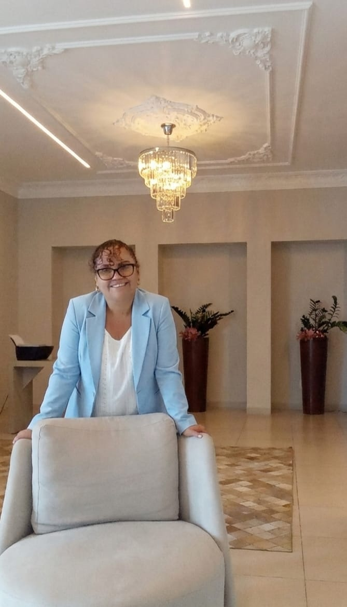

Minha cabeça não para.
Preocupações, medo e pensamentos que não dão trégua.
Quero falar sobre issoEncontrar um espaço de acolhimento e escuta pode ser o primeiro passo para começar a cuidar de você ou de quem você ama.
Preocupações, medo e pensamentos que não dão trégua.
Quero falar sobre issoQuando o peso emocional começa a ficar demais.
Quero falar sobre issoQuando amar, agradar e se doar começa a fazer você se perder.
Quero falar sobre issoQuando a dor de uma perda parece difícil de superar.
Quero falar sobre issoQuando a vontade, a energia e a alegria parecem desaparecer.
Quero falar sobre issoQuando uma nova fase traz medo, dúvidas e insegurança.
Quero falar sobre issoQuando aprender, concentrar-se ou acompanhar a escola virou uma preocupação.
Quero falar sobre issoQuando ele se isola, muda o comportamento ou já não quer conversar.
Quero falar sobre issoVocê não precisa passar por isso sozinho(a).
Quero falar com a Dra. Edilamar Conheça a Dra. Edilamar
Edilamar Erica Ferreira, conhecida carinhosamente como Dra. Dila, é palestrante, instrutora e especialista em comportamento humano e saúde emocional, com mais de 15 anos de estudos e experiências dedicados ao desenvolvimento humano.
Fundadora da E.CLINIC, realiza atendimentos presenciais e online, oferecendo um cuidado humanizado baseado na Psicanálise, Neurociência e práticas fundamentadas em evidências, sempre respeitando a individualidade de cada pessoa.
Seu propósito é ajudar pessoas a encontrarem equilíbrio emocional, fortalecerem seus relacionamentos e desenvolverem uma vida mais saudável, consciente e plena.
Agendar Consulta Conheça minhas especialidadesSeu cuidado é único. Conheça as especialidades e descubra como posso ajudar você em cada etapa da sua jornada. Clique em um tema para solicitar mais informações.
Conheça algumas das palestras ministradas pela Dra. Edilamar. Todos os treinamentos podem ser personalizados para empresas, instituições, escolas, universidades e eventos corporativos. Clique em um tema para solicitar mais informações.
O processo terapêutico é construído de forma individualizada, considerando a história, as necessidades e o momento de cada pessoa.
Cada história merece ser compreendida com atenção, acolhimento e respeito àquilo que torna cada pessoa única.
02A psicoterapia utiliza técnicas personalizadas de acordo com as características, necessidades e objetivos de cada indivíduo.
03Diferentes conhecimentos e práticas podem integrar o processo de cuidado, considerando a pessoa de forma ampla e individualizada.
04Cada pessoa possui seu próprio ritmo. O processo é conduzido com acolhimento, ética e respeito à individualidade.
Cuidar da saúde emocional não é seguir uma fórmula. É encontrar um caminho que faça sentido para você.
Encontre respostas para algumas das dúvidas mais comuns antes de dar o primeiro passo.
O primeiro atendimento é um espaço de acolhimento e escuta, para compreender o que você está vivendo e conhecer melhor suas necessidades.
Sim. A Dra. Edilamar realiza atendimentos presenciais e online.
Não. Muitas vezes, a pessoa percebe apenas que algo não está bem. Procurar acolhimento pode ser o primeiro passo para compreender melhor o que está acontecendo.
A Dra. Edilamar atua em diferentes áreas relacionadas à saúde emocional, comportamento humano, relacionamentos, luto, ansiedade, burnout e momentos de transição.
O trabalho utiliza Psicanálise, Neurociência e práticas fundamentadas em evidências, além de psicoterapia com técnicas personalizadas para cada indivíduo, sempre respeitando a singularidade e as necessidades de cada pessoa.
A atuação também contempla a Neuropsicopedagogia Clínica e Institucional e questões relacionadas ao desenvolvimento.
Você pode entrar em contato pelo WhatsApp para conversar sobre seu caso e saber mais sobre o atendimento.
Ainda ficou com alguma dúvida?
Quero falar com a Dra. Edilamar